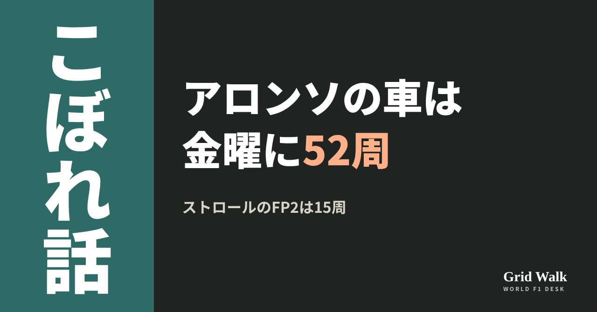
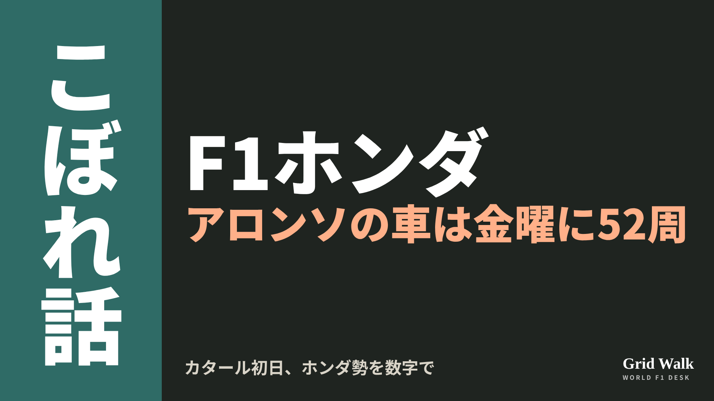

<meta charset="utf-8"><title>11/28未明のコラム note貼り付け</title>
<style>
/* one column of numbered paste steps; text steps vs image steps differ by marker */
:root{--bg:#F5F4F0;--card:#FFFFFF;--ink:#1D2321;--mute:#5F665F;--line:#DCDAD2;--btn:#1F5FBF;--btnok:#2E8B4F;--img:#E9F3EC;--imgink:#22663B;--sans:'IBM Plex Sans JP','Hiragino Sans','Noto Sans JP',sans-serif}
@media (prefers-color-scheme:dark){:root:not([data-theme="light"]){--bg:#171A19;--card:#202423;--ink:#ECEDE8;--mute:#A3AAA2;--line:#343937;--btn:#4D8BE6;--btnok:#3FA866;--img:#1E2C23;--imgink:#8FD3A6;color-scheme:dark}}
:root[data-theme="dark"]{--bg:#171A19;--card:#202423;--ink:#ECEDE8;--mute:#A3AAA2;--line:#343937;--btn:#4D8BE6;--btnok:#3FA866;--img:#1E2C23;--imgink:#8FD3A6;color-scheme:dark}
body{background:var(--bg);color:var(--ink);font-family:var(--sans);font-size:15px;line-height:1.75;padding:20px 16px 60px}
main{max-width:680px;margin:0 auto;display:grid;gap:28px}
header h1{font-size:22px;margin:0 0 6px;text-wrap:balance}
header p{margin:0;color:var(--mute);font-size:14px}
nav{display:flex;gap:8px;flex-wrap:wrap;margin-top:12px}
nav a{border:1px solid var(--line);border-radius:999px;padding:4px 14px;color:var(--ink);text-decoration:none;font-size:14px;background:var(--card)}
.part h2{font-size:18px;line-height:1.5;margin:0 0 12px;text-wrap:balance;display:flex;gap:10px;align-items:baseline;flex-wrap:wrap}
.tag{font-size:13px;background:var(--ink);color:var(--bg);border-radius:6px;padding:1px 9px}
.steps{list-style:none;margin:0;padding:0;display:grid;gap:12px}
.st{background:var(--card);border:1px solid var(--line);border-radius:12px;padding:12px;min-width:0}
.hd{display:flex;align-items:center;gap:8px;margin-bottom:8px}
.no{width:26px;height:26px;border-radius:50%;background:var(--btn);color:#fff;display:inline-flex;align-items:center;justify-content:center;font-size:13px;font-weight:700;flex:0 0 26px}
.im .no{background:var(--btnok)}
.hd em{font-style:normal;font-size:12px;background:var(--img);color:var(--imgink);border-radius:6px;padding:0 8px}
.bx{font-size:13.5px;line-height:1.7;border:1px solid var(--line);border-radius:8px;padding:8px 10px;max-height:110px;overflow:auto;overflow-wrap:anywhere}
.bx.tall{max-height:150px}.bx p{margin:0 0 6px}.bx h2{font-size:14px;margin:8px 0 4px}.bx a{color:var(--btn)}
.st img{display:block;width:100%;max-width:100%;border:1px solid var(--line);border-radius:8px}
.sub{font-size:12.5px;color:var(--mute);margin:6px 0 0}
.cp{width:100%;margin-top:8px;padding:12px;border:0;border-radius:10px;background:var(--btn);color:#fff;font:600 15px var(--sans);cursor:pointer}
.cp.ok{background:var(--btnok)}.cp.dl{background:var(--btnok)}.cp:focus-visible{outline:3px solid var(--ink);outline-offset:2px}
.xh{font-size:15px;margin:20px 0 10px}
.fb{font-size:13px;line-height:1.7;margin:8px 0 0;padding:8px 10px;border-radius:8px;background:var(--img);color:var(--imgink)}
.opts{display:grid;grid-template-columns:repeat(auto-fill,minmax(240px,1fr));gap:10px}
.opt{min-width:0}.opt img{display:block;width:100%;border:1px solid var(--line);border-radius:8px}
.ol{display:flex;align-items:center;gap:8px;margin-top:6px}.ol b{font-size:13px;flex:0 0 auto}.ol .on{font-size:12.5px;color:var(--mute);flex:1;min-width:0}.ol .cp{width:auto;flex:0 0 auto;padding:9px 14px}.ol .cp{margin:0;padding:9px}
.toast{font-size:13px;color:var(--mute);margin-top:6px}
</style>
<main><header><h1>11/28未明のコラム note貼り付け</h1><p>いま公開済みは1本です。青い番号は文章、緑は画像です。</p><nav><a href="#p1">1</a></nav></header><section class="part" id="p1"><h2><span class="tag">OFF GRID</span>アロンソの車は金曜に52周　ホンダ勢のカタール初日を数字で</h2><p class="sub">サイトに公開：04:15</p><ol class="steps">
<li class="st im"><div class="hd"><span class="no">1</span><b>見出し画像</b><em>画像</em></div><button class="cp dl" data-img="img/honda-qatar-friday-numbers-20261128.png" data-name="honda-qatar-friday-numbers-20261128_見出し画像.png">ダウンロード</button></li>
<li class="st"><div class="hd"><span class="no">2</span><b>タイトル</b></div><div class="bx" id="p1t">アロンソの車は金曜に52周　ホンダ勢のカタール初日を数字で</div><button class="cp" data-plain="p1t">タイトルをコピー</button></li>
<li class="st"><div class="hd"><span class="no">3</span><b>本文</b></div><div class="bx tall" id="p1r"><p>第22戦カタールGPの金曜日、11月27日。ラスベガスGPの最後の周にフェルナンド・アロンソがエンジンが壊れたと訴えてリタイアしてから、初めての走行日でした。ホンダはデータにも点検にも問題は見つからないとして、同じユニットを金曜に走らせて確かめる予定だと説明していました。いきさつはコラム https://f1gridwalk.github.io/lens/honda-alonso-engine-no-fault-20261127/ で書いています。イギリスのPlanetF1もFP1の記事で、ホンダは問題はないとしながら、FP1でそのユニットを走らせて確かめるとしていた、と振り返っています。</p><p>ラスベガスのあとのホンダの説明と、クロフォードのFP1起用のいきさつはサイトで → <a href="https://f1gridwalk.github.io/lens/honda-qatar-friday-numbers-20261128/?utm_source=note&amp;utm_campaign=honda-qatar-friday-numbers-20261128">https://f1gridwalk.github.io/lens/honda-qatar-friday-numbers-20261128/?utm_source=note&amp;utm_campaign=honda-qatar-friday-numbers-20261128</a></p><p>金曜の結果が、トラブルの有無を直接語るわけではありません。ここでは、走った周回数とタイムを並べてみます。</p><h2>FP1は代役のクロフォードが25周</h2><p>1回目のフリー走行（FP1）でアロンソの車に乗ったのは、サードドライバーのジャック・クロフォードです（OFF GRID https://f1gridwalk.github.io/lens/crawford-qatar-fp1-20261126/ ）。FIAの結果によると、クロフォードは25周を走り、ベストは1分26秒306で19番手。トップのキミ・アントネッリ（メルセデス）の1分23秒217から3秒089遅れです。ランス・ストロールは21周で1分26秒416、20番手でした。</p><p>アストンマーティンの2台より後ろは、キャデラックのセルジオ・ペレスとバルテリ・ボッタスの2台だけです。F1公式の記事も、クロフォード、ストロール、キャデラックの2台の順で終わったと伝えています。クロフォードとペレスの差は0秒380でした。アロンソは木曜のメディア対応を休んでいます（https://f1gridwalk.github.io/lens/alonso-virus-media-day-20261127/ ）。</p><h2>FP2はアロンソが27周、ストロールは15周</h2><p>2回目のフリー走行（FP2）で、アロンソが今週末はじめて車に乗りました。セッションは、シャルル・ルクレールのスピンで飛んだ砂利の片づけと、ピエール・ガスリーが砂利で止まったことで2度赤旗が出て、13分延長されています（The Race、Autosport）。</p><p>FIAの公式結果（決定文書21）によると、アロンソは27周を走り、1分26秒046で19番手。トップのアントネッリの1分23秒077から2秒969遅れで、18番手のオリバー・ベアマン（ハース）とは0秒050差でした。ストロールは15周で1分26秒648、20番手で、差は3秒571です。</p><p>ストロールの15周は、赤旗の原因になったガスリーの14周に次いで、22人の中で2番目に少ない数字です。PlanetF1は、ストロールが2コーナーでアンダーステアを出してコースを外れた場面を書いていますが、周回が少なかった理由は、ここで読んだ記事には書かれていません。</p><p>キャデラックとの比較では、アロンソは21番手のボッタス（1分27秒394）より1秒348速く、ストロールもボッタスの0秒746前でした。22番手はペレスの1分27秒511。周回はボッタス29周、ペレス27周です。</p><h2>2回の走行で、合わせて52周</h2><p>金曜の2回の走行で、アロンソの車はクロフォードの25周とアロンソの27周で、合わせて52周を走ったことになります。ストロールの車は36周です。ただ、金曜のあとにホンダがユニットを替えたかどうかは、ここで読んだ記事には書かれていません。</p><p>編集部としては、ラスベガスのあとの疑問に対する手がかりは、いまのところこの周回数にしかないと見ています。ホンダの言い分が本当に試されるのは、週末の予選と、日本時間30日未明の決勝です。直線でラスベガスほどの差が出るのかも、あわせて見ておきたいところです（https://f1gridwalk.github.io/lens/stroll-honda-two-seconds-20261125/ ）。</p><p><strong>金曜にアロンソの車が走った52周。あなたはこの数字を、エンジンに問題はないというホンダの言い分の裏づけと見ますか？</strong></p><p>━━━━━━━━━━</p><p><strong>F1 Grid Walk では、世界のF1ニュースを毎日日本語でまとめています。</strong></p><p>海外の記事の要約を、毎日載せています。</p><p><a href="https://f1gridwalk.github.io/">https://f1gridwalk.github.io/</a></p><p>ほかの海外記事も読みたい方は、F1 Grid Walkへ。</p><p><a href="https://f1gridwalk.github.io/lens/honda-qatar-friday-numbers-20261128/">https://f1gridwalk.github.io/lens/honda-qatar-friday-numbers-20261128/</a></p><p>━━━━━━━━━━</p><p><a href="https://www.fia.com/news/f1-antonelli-leads-mercedes-one-two-qatar-opening-practice">出典：FIA（国際）</a></p><p><a href="https://www.fia.com/system/files/decision-document/2026_qatar_grand_prix_-_free_practice_2_classification.pdf">出典：FIA（国際）</a></p><p><a href="https://www.formula1.com/en/latest/article/fp1-antonelli-leads-russell-in-qatar-as-mercedes-control-opening-practice.3v7t8Oja9vAGkic9TxN7FR">出典：F1公式サイト（イギリス）</a></p><p><a href="https://planetf1.com/news/2026-qatar-grand-prix-fp1-report">出典：PlanetF1（イギリス）</a></p><p><a href="https://www.autosport.com/f1/news/f1-qatar-gp-fp2-report/10878347/">出典：Autosport（イギリス）</a></p><p><a href="https://www.the-race.com/formula-1/antonelli-tops-qatar-fp2-after-multiple-red-flag-delays-f1/">出典：The Race（イギリス）</a></p><p><a href="https://www.planetf1.com/news/2026-qatar-grand-prix-fp2-report">出典：PlanetF1（イギリス）</a></p><p><a href="https://www.formula1.com/en/racing/2026">出典：F1公式サイト（イギリス）</a></p></div><button class="cp" data-rich="p1r">本文をコピー</button></li>
<li class="st"><div class="hd"><span class="no">4</span><b>ハッシュタグ</b></div><div class="bx" id="p1h">#F1 #F1jp #アストンマーティン #ホンダ #アロンソ #ストロール #クロフォード #カタールGP #F1こぼれ話 #OFFGRID</div><button class="cp" data-plain="p1h">タグをコピー</button></li>
</ol><h3 class="xh">X</h3><ol class="steps">
<li class="st im"><div class="hd"><b>X用の画像</b><em>画像</em></div><button class="cp dl" data-img="img/x_honda-qatar-friday-numbers-20261128.png" data-name="x_honda-qatar-friday-numbers-20261128.png">ダウンロード</button></li>
<li class="st"><div class="hd"><b>① noteをシェアするときの文</b></div><div class="bx" id="p1x0">ラスベガスで止まったのと同じユニットで、カタールの金曜を走ったホンダ。アロンソの車はクロフォードとアロンソで合わせて52周、FP2はアロンソ19番手、ストロール20番手でした。数字でまとめました #F1jp #ホンダ #アロンソ</div><button class="cp" data-plain="p1x0">コピー</button></li>
<li class="st"><div class="hd"><b>② ①への返信</b></div><div class="bx" id="p1x1">ほかの海外記事も読みたい方は、F1 Grid Walkへ。
https://f1gridwalk.github.io/lens/honda-qatar-friday-numbers-20261128/?utm_source=x&amp;utm_campaign=honda-qatar-friday-numbers-20261128</div><button class="cp" data-plain="p1x1">コピー</button></li>
<li class="st"><div class="hd"><b>③ ②への返信</b></div><div class="bx" id="p1x2">毎日の海外F1ニュースは、日本語でこちらにまとめています。
https://f1gridwalk.github.io/</div><button class="cp" data-plain="p1x2">コピー</button></li>
</ol></section></main><script>
function done(b,msg){const t=b.dataset.t||b.textContent;b.dataset.t=t;b.classList.add('ok');b.textContent=msg||'コピーしました';setTimeout(()=>{b.classList.remove('ok');b.textContent=t},2000)}
function selectEl(el){const r=document.createRange();r.selectNodeContents(el);const s=getSelection();s.removeAllRanges();s.addRange(r)}
async function rich(el,b){
  try{await navigator.clipboard.write([new ClipboardItem({'text/html':new Blob([el.innerHTML],{type:'text/html'}),'text/plain':new Blob([el.innerText],{type:'text/plain'})})]);done(b);return}catch(e){}
  selectEl(el);let ok=false;try{ok=document.execCommand('copy')}catch(e){}
  if(ok){getSelection().removeAllRanges();done(b)}else{done(b,'選択しました。コピーしてください')}}
async function plain(el,b){
  try{await navigator.clipboard.writeText(el.innerText);done(b);return}catch(e){}
  selectEl(el);let ok=false;try{ok=document.execCommand('copy')}catch(e){}
  if(ok){getSelection().removeAllRanges();done(b)}else{done(b,'選択しました。コピーしてください')}}
let dlns=null;(async()=>{try{dlns=await window.claude?.use?.("downloads")}catch(e){dlns=null}})();
async function img(src,b){
  b.dataset.t=b.dataset.t||b.textContent;
  if(!dlns){try{dlns=await window.claude?.use?.("downloads")}catch(e){}}
  if(!dlns){b.textContent='ダウンロードできませんでした';setTimeout(()=>{b.textContent=b.dataset.t},3500);return}
  try{const blob=await fetch(src).then(r=>r.blob());b.textContent='保存の確認を開いています…';
    await dlns.save({filename:b.dataset.name,data:blob});done(b,'ダウンロードしました')}
  catch(e){const c=e&&e.code;b.textContent=c==='declined'?'キャンセルしました':c==='rate_limited'?'少し待ってからもう一度押してください':'ダウンロードできませんでした';setTimeout(()=>{b.textContent=b.dataset.t},3500)}}
document.querySelectorAll('.cp').forEach(b=>b.addEventListener('click',()=>{
  if(b.dataset.rich)rich(document.getElementById(b.dataset.rich),b);
  else if(b.dataset.plain)plain(document.getElementById(b.dataset.plain),b);
  else img(b.dataset.img,b)}));
</script>